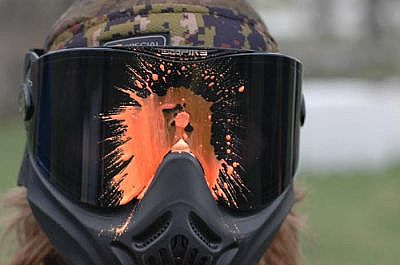

Your Mask is your Friend
It is obvious that paintball is a dangerous sport if played improperly. Protective gear is necessary if you want to be safe and certain that no one will be injured. Apart from being physically demanding, you must protect your face and ears. This is accomplished by wearing a mask. Minimally, you must wear a mask to remain safe.
Along with your mask, most players wear gloves to protect fingers which will hurt particularly if hit. Some also choose to wear a chest and back protector. Essentially a flak jacket that will reduce the impact of a hit. Most will wear at least a long sleeve jacket and pants.
Another element of safety that all professional and safe fields will require is chronographing your marker so that the speed is not too harsh when you are hit while still reaching across the field. The field will also require that you have a barrel cover or plug of some sort covering your gun's barrel while you are not in play.